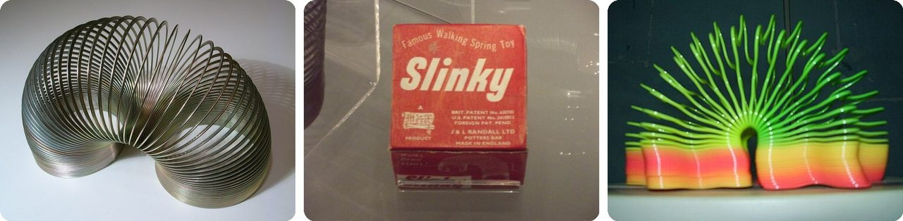
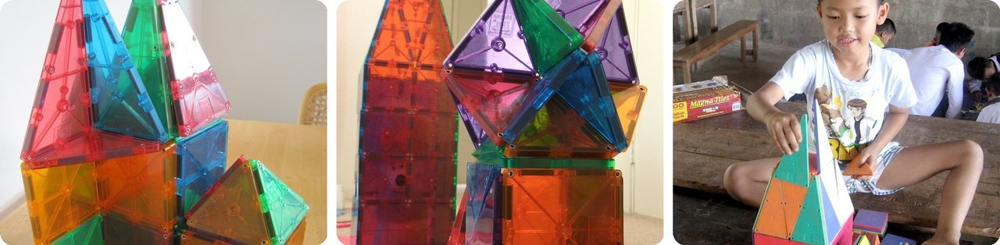
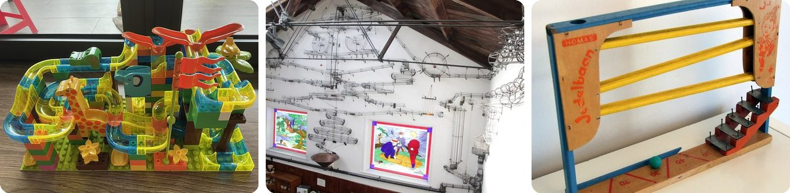
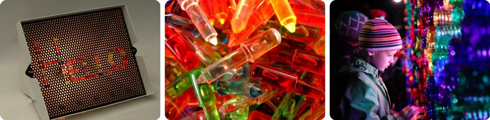
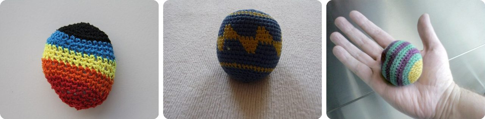
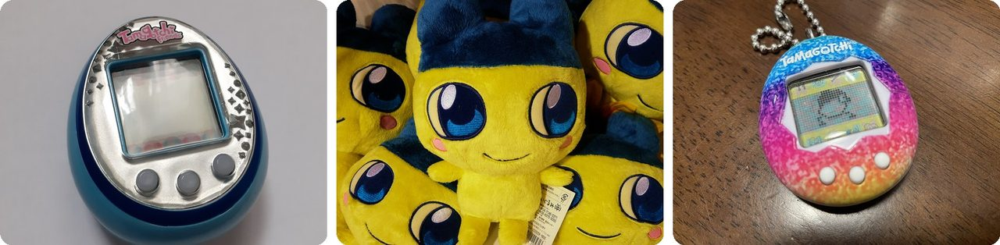
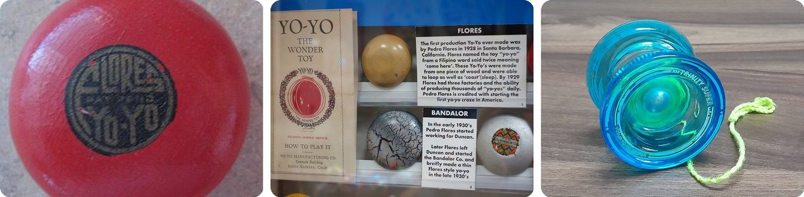
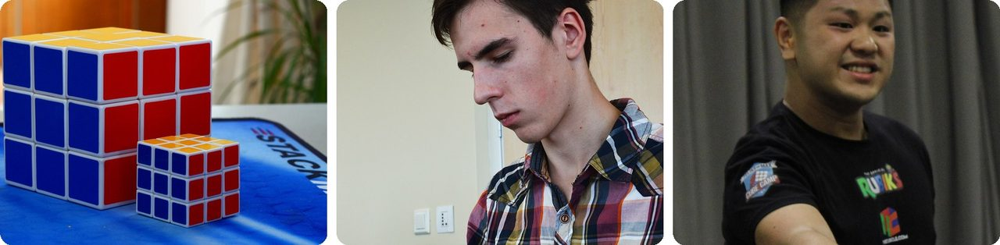
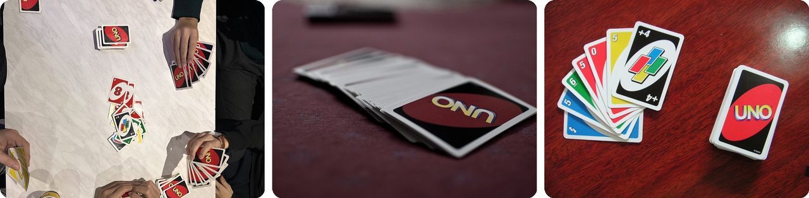
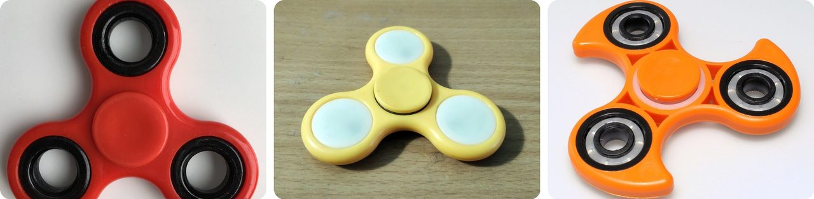

🌍 十大 2026 年被低估的儿童节日礼物
2026年11月9日
1. 🇺🇸 彩虹弹簧圈（Slinky）是在感恩节后一炮而红的

老派玩具又回到了 2026 年的心愿单上，家长们甚至跑去二手店淘 Slinky。它的故事要从 1943 年说起：一位名叫理查德·詹姆斯的海军工程师，看到一根弹簧从架子上掉下来，好像在“走路”。他花了大约一年时间试验各种钢丝，终于找到了一种真的能自己“走”下楼梯的弹簧。玩具店都不感兴趣，于是在 1945 年感恩节后的那个星期二，他在费城一家百货商店里搭了个小斜坡来演示。
头 400 个 Slinky 在 90 分钟内就卖光了，每个 1 美元。相当于每分钟卖出四个多。
说白了，是节日购物潮让 Slinky 出了名。
2. 🇯🇵 磁力片 Magna-Tiles 最早在日本叫“毕达哥拉斯”

Magna-Tiles 出现在 2026 年最热门的“不用屏幕”玩具榜单上。它们是透明的塑料几何片，里面藏着磁铁，所以能“啪”地吸在一起，搭成高塔、房子和火箭。它们最早在日本销售，名字叫 Pythagoras（毕达哥拉斯），这是古希腊一位著名数学家的名字。1996 年，美国推销员鲁迪·瓦伦塔去日本出差时看到了这款玩具，就买下了它的版权。
这个“数学味”很浓的名字在美国没火起来，于是他把它改名叫 Magna-Tiles。一开始卖得很慢，可到了 2015 年，好像美国几乎每个小孩都有一套。
这是一堂几何课，可孩子们只觉得自己在搭城堡。
3. 🎢 有些弹珠轨道比房子还高

像 GraviTrax 这样的弹珠轨道套装，上了 2026 年“不用屏幕”的礼物榜单。你把弹珠从最上面放下去，剩下的全交给重力：它会滚下斜坡、绕着漏斗打转，再掉进下一段轨道。大人们对这个可是非常认真。最高的一座叫“能量机器”，在香港科学馆里，足足有 22 米（72 英尺）高，差不多有七层楼那么高。
史上最长的弹珠轨道，是 2017 年在瑞士搭成的，长将近 2.9 公里（1.8 英里）。走完一遍大概要半个小时。
可以把它想成一座过山车，唯一的乘客就是那颗弹珠。
4. 💡 每一幅 Lite-Brite 灯钉画都只能做一次

迷你版 Lite-Brite 出现在 2026 年的圣诞袜小礼物清单上。这款玩具最早在 1967 年推出：一个灯箱，前面蒙一张黑纸，再配上一大堆彩色的小塑料钉。你把小钉子一个个插穿黑纸。黑纸会挡住所有的光，只有插着钉子的地方会透光，所以这些钉子就像一个个彩色小灯泡一样亮起来。
问题来了：每插一颗钉子就会戳出一个洞，所以 每张纸只能用一次。2022 年，Lite-Brite 进入了美国国家玩具名人堂。
换句话说，它是一本用光来涂色的涂色书。
5. 🇺🇸 沙包球（hacky sack）是 1972 年俄勒冈州两个朋友发明的

沙包球上了 2026 年的“流行圣诞袜小礼物”清单。它是一个圆圆的小布袋，里面装着塑料颗粒或沙子，玩法是只用脚让它一直停在空中不落地。这类踢的游戏历史很悠久：日本有蹴鞠（kemari），韩国和中国也有踢羽毛毽子的游戏（jegichagi 和 jianzi，也就是踢毽子）。不过现代版本是在 1972 年 由迈克·马歇尔和约翰·斯塔尔伯格在俄勒冈州的俄勒冈城发明的，他们把它当作“Hacky Sack”来卖。
这个名字太深入人心了，现在大家把所有的脚踢沙包都叫 hacky sack，虽然它其实是个品牌名。
就像大家把所有面巾纸都叫“舒洁”一样，只不过这是一个用脚踢的球。
6. 🇯🇵 Tamagotchi 在日语里的意思是“蛋表”

有人预测，配有同款毛绒玩具的 Tamagotchi（拓麻歌子）会成为 2026 年最热门的玩具之一。它是装在蛋形小壳里的电子宠物：你要喂它、给它打扫、陪它玩，它才会长大。这个名字是把日语的 tamago（蛋）和 uotchi（手表）合在一起，因为最初的想法是把它像手表一样戴在手腕上。它在 1996 年 11 月 23 日于日本上市。
它火到什么程度呢？生产它的万代公司（Bandai）甚至告诉员工，别拎印着万代标志的袋子出门，免得有人为了抢 Tamagotchi 把袋子偷走。到现在，它已经卖出了超过 9800 万个。
说白了，它就是一只住在钥匙扣上的宠物。
7. 🇵🇭 “yo-yo”（溜溜球）这个词很可能来自菲律宾

溜溜球是家长们 2026 年又在到处找的另一款经典玩具。这个玩具非常古老：早在公元前 440 年就有人写到过它。“yo-yo”这个词很可能来自菲律宾伊洛卡诺语里的 yóyo。1928 年，菲律宾移民佩德罗·弗洛雷斯在加州圣巴巴拉开了一家溜溜球公司，一开始只有十几个手工做的溜溜球。
仅仅一年后，他的工厂就有了 600 名工人，每天生产 30 万个溜溜球。差不多每秒钟三个半，白天黑夜不停。
可以把它想成一个已经两千四百多岁、却还没过时的玩具。
8. 🇭🇺 最快的魔方还原只用了 2.51 秒

速拧魔方套装上了 2026 年的圣诞袜小礼物清单。速拧魔方是转起来又快又顺的魔方，比谁还原得最快，这就叫速拧（speedcubing）。第一个魔方是 1974 年由匈牙利的建筑学教授鲁比克·艾尔诺发明的。第一届魔方速拧世界锦标赛在 1982 年于布达佩斯举行。
截至 2026 年 8 月，单次还原的世界纪录是 2.51 秒，由中国选手耿暄一创造。这比你系一只鞋带还快。
眨两下眼，整个魔方就拼好了。
9. 🇺🇸 UNO 是俄亥俄州一位理发师发明的

超迷你的“世界最小” UNO 牌出现在 2026 年的圣诞袜小礼物清单上。正常大小的 UNO 是 1971 年由默尔·罗宾斯在俄亥俄州辛辛那提附近的里丁发明的。他的家人和朋友都玩得停不下来，于是罗宾斯一家拿房子做抵押，凑了 8000 美元，印了 5000 套。他一开始就在自己的理发店里卖。
后来，他以 5 万美元的价格卖掉了这款游戏，另外每卖出一套还能拿 10 美分。2018 年，UNO 进入了美国国家玩具名人堂。
换句话说，全世界最受欢迎的纸牌游戏之一，是从理发店的柜台开始的。
10. 🌀 指尖陀螺那位出名的“发明人”其实并没有发明它

自己动手组装的指尖陀螺，出现在 2026 年的圣诞袜小礼物清单上。指尖陀螺中间有一个滚珠轴承，周围是几个带配重的“手臂”。因为大部分重量都离中心比较远，所以轻轻一拨，它就能转很久。2017 年指尖陀螺爆红时，一些大报纸说它是化学工程师凯瑟琳·赫廷格发明的。可她 1993 年的“旋转玩具”更像一个小小的手指飞盘，而且 中间并没有滚珠轴承。
带有这种中心轴承的指尖陀螺，专利是 2016 年由别人申请的。
就像一个大家都在传的出名故事，最后发现是一场误会。
趣闻
Slinky 后来可不只是个玩具。老师们把它当成课堂上的教学工具；在越南战争中，士兵们还把 Slinky 拉长，当成可以随身携带的无线电天线。在它诞生后的头 60 年里，大约卖出了 3 亿个 Slinky。很多玩具后来都找到了让人意想不到的“大人工作”，它就是其中之一。
图片来源（Wikimedia Commons）
- #1: 2006-02-04 Metal spiral.jpg by Roger McLassus, CC BY-SA 3.0
- #1: We Made It - Thinktank Birmingham Science Museum - Slinky - box (8613923517).jpg by ell brown, CC BY-SA 2.0
- #1: Colored slinky.jpg by Twooars (talk) (Uploads), Public domain
- #2: Magna-Tile Tower (flickr) by AndWat, CC BY-SA 2.0
- #2: Magna Tiles (flickr) by mjambon, CC BY 2.0
- #2: Magna-Tiles at Big Brother Mouse activity day in Laos.jpg by Blue Plover, CC BY-SA 3.0
- #3: Mega Marble Run set.jpg by Hillsilo, CC BY-SA 4.0
- #3: Snooki2000 Marble Run at House of Marbles.jpg by HouseOfMarbles, CC BY-SA 4.0
- #3: Murmelbahn.JPG by Carl Steinbeißer, Public domain
- #4: Hello on a Lite-Brite.jpg by thomas ambridge, CC BY-SA 3.0
- #4: Vintage Lite Brites (flickr) by frankieleon, CC BY 2.0
- #4: Lite brite Toronto Nuit Blanche.jpg by Gregory White from Toronto, Canada, CC BY 2.0
- #5: Hacky Sack on White Background.jpg by Jforder2, CC BY-SA 4.0
- #5: Crocheted hacky sack (2).jpg by I would appreciate being notified if you use my work outside Wikimedia. Do not copy this image illegally by ignoring the terms of the license below, as it is not in the public domain. If you would like special permission to use, license, or purchase the image please contact me to negotiate terms. More of my work can be found in my personal gallery., CC BY-SA 3.0
- #5: Hacky sack (flickr) by Joe Crawford (artlung), CC BY 2.0
- #6: Tamagotchi Friends.png by Cpd1009, CC BY-SA 4.0
- #6: Yellow Tamagotchi (flickr) by DocChewbacca, CC BY-SA 2.0
- #6: たまごっち変なのなった (53702651578).jpg by Nori Norisa, CC BY 2.0
- #7: Flores 1.JPG by Kroytz, Public domain
- #7: National Yo-Yo Museum - Chico, CA - DSC03085.JPG by Daderot, CC0
- #7: Blue Yoyo.jpg by Broveer, CC BY-SA 4.0
- #8: XL and XS (flickr) by fw42, CC BY 2.0
- #8: Estonian Open 2013 - Rubik's cube.JPG by Ivo Kruusamägi, CC BY-SA 4.0
- #8: Max Park WR Average (cropped).jpg by Just a cuber, CC0
- #9: UNO - table game.jpg by Behruznurullayevv, CC0
- #9: UNO (5573527833).jpg by Rishabh Mathur from Bangalore, India, CC BY-SA 2.0
- #9: Uno (flickr) by Natecull, CC BY-SA 2.0
- #10: Fidget spinner red, cropped.jpg by Árni Dagur, CC0
- #10: Fidget spinner (Yellow) 2026 (01).jpg by Gpkp, CC BY-SA 4.0
- #10: FidgetSpinner.jpg by Florian Schäffer, CC BY-SA 4.0

.jpg){kind=link}


.jpg){kind=link}

.jpg){kind=link}


.jpg){kind=link}

.jpg){kind=link}

_2026_(01).jpg){kind=link}